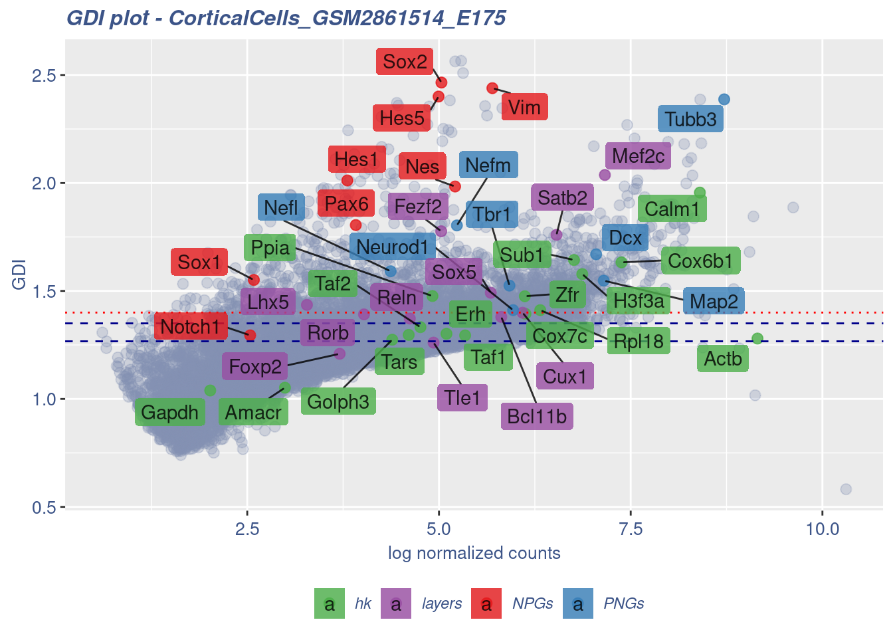

library(COTAN)
library(ComplexHeatmap)
library(circlize)Gene Correlation Analysis E17.5
To compare the ability of COTAN to asses the real correlation between genes we define some pools of genes:
- Constitutive genes
- Neural progenitor genes
- Pan neuronal genes
- Some layer marker genes
genesList <- list(
"NPGs"=
c("Nes", "Vim", "Sox2", "Sox1", "Notch1", "Hes1", "Hes5", "Pax6"),
"PNGs"=
c("Map2", "Tubb3", "Neurod1", "Nefm", "Nefl", "Dcx", "Tbr1"),
"hk"=
c("Calm1", "Cox6b1", "Ppia", "Rpl18", "Cox7c", "Erh", "H3f3a",
"Taf1", "Taf2", "Gapdh", "Actb", "Golph3", "Zfr", "Sub1",
"Tars", "Amacr"),
"layers" =
c("Reln","Lhx5","Cux1","Satb2","Tle1","Mef2c","Rorb","Sox5","Bcl11b","Fezf2","Foxp2")
)COTAN
obj <- readRDS("Data/Yuzwa_MouseCortex/CorticalCells_GSM2861514_E175.cotan.RDS")coexMat.big <- getGenesCoex(obj)[c(genesList$NPGs,genesList$hk,genesList$PNGs,genesList$layers),c(genesList$NPGs,genesList$hk,genesList$PNGs,genesList$layers)]
coexMat <- getGenesCoex(obj)[c(genesList$NPGs,genesList$hk,genesList$PNGs),c(genesList$NPGs,genesList$hk,genesList$PNGs)]
f1 = colorRamp2(seq(-0.5,0.5, length = 3), c("#DC0000B2", "white","#3C5488B2" ))
split.genes <- factor(c(rep("NPGs",length(genesList[["NPGs"]])),
rep("HK",length(genesList[["hk"]])),
rep("PNGs",length(genesList[["PNGs"]]))
),
levels = c("NPGs","HK","PNGs"))
lgd = Legend(col_fun = f1, title = "COTAN coex")
htmp <- Heatmap(as.matrix(coexMat),
#width = ncol(coexMat)*unit(2.5, "mm"),
height = nrow(coexMat)*unit(3, "mm"),
cluster_rows = FALSE,
cluster_columns = FALSE,
col = f1,
row_names_side = "left",
row_names_gp = gpar(fontsize = 11),
column_names_gp = gpar(fontsize = 11),
column_split = split.genes,
row_split = split.genes,
cluster_row_slices = FALSE,
cluster_column_slices = FALSE,
heatmap_legend_param = list(
title = "COTAN coex", at = c(-0.5, 0, 0.5),direction = "horizontal",
labels = c("-0.5", "0", "0.5")
)
)
draw(htmp, heatmap_legend_side="right")
GDIPlot(obj,genes = genesList,GDIThreshold = 1.4)
Seurat correlation
library(dplyr)
library(Seurat)
library(patchwork)
library(Rfast)srat<- CreateSeuratObject(counts = getRawData(obj), project = "E14.5", min.cells = 3, min.features = 200)
srat[["percent.mt"]] <- PercentageFeatureSet(srat, pattern = "^mt-")
srat <- NormalizeData(srat)
srat <- FindVariableFeatures(srat, selection.method = "vst", nfeatures = 2000)
# plot variable features with and without labels
plot1 <- VariableFeaturePlot(srat)
LabelPoints(plot = plot1, points = c(genesList$NPGs,genesList$PNGs,genesList$layers), repel = TRUE)
LabelPoints(plot = plot1, points = c(genesList$hk), repel = TRUE)
all.genes <- rownames(srat)
srat <- ScaleData(srat, features = all.genes)
seurat.data = srat[["RNA"]]@dataseurat.data.cor.big = cora(t(as.matrix(seurat.data)[c(genesList$NPGs,genesList$hk,genesList$PNGs, genesList$layers),]), large = T)
rownames(seurat.data.cor.big) <- c(genesList$NPGs,genesList$hk,genesList$PNGs,genesList$layers)
colnames(seurat.data.cor.big) <- c(genesList$NPGs,genesList$hk,genesList$PNGs, genesList$layers)
diag(seurat.data.cor.big) <- 0
seurat.data.cor <- seurat.data.cor.big[c(genesList$NPGs,genesList$hk,genesList$PNGs),c(genesList$NPGs,genesList$hk,genesList$PNGs)]
f1 = colorRamp2(seq(-0.5,0.5, length = 3), c("#DC0000B2", "white","#3C5488B2" ))
split.genes <- factor(c(rep("NPGs",length(genesList[["NPGs"]])),
rep("HK",length(genesList[["hk"]])),
rep("PNGs",length(genesList[["PNGs"]]))),
levels = c("NPGs","HK","PNGs"))
lgd = Legend(col_fun = f1, title = "COTAN coex")
htmp <- Heatmap(as.matrix(seurat.data.cor),
#width = ncol(seurat.corMat)*unit(2.5, "mm"),
height = nrow(seurat.data.cor)*unit(3, "mm"),
cluster_rows = FALSE,
cluster_columns = FALSE,
col = f1,
row_names_side = "left",
row_names_gp = gpar(fontsize = 11),
column_names_gp = gpar(fontsize = 11),
column_split = split.genes,
row_split = split.genes,
cluster_row_slices = FALSE,
cluster_column_slices = FALSE,
heatmap_legend_param = list(
title = "Seurat corr", at = c(-0.5, 0, 0.5),direction = "horizontal",
labels = c("-0.5", "0", "0.5")
)
)
draw(htmp, heatmap_legend_side="right")srat <- SCTransform(srat, method = "glmGamPoi", vars.to.regress = "percent.mt", verbose = FALSE)
seurat.data = srat[["SCT"]]@data
seurat.data.cor.big = cora(t(as.matrix(seurat.data)[c(genesList$NPGs,genesList$hk,genesList$PNGs, genesList$layers),]), large = T)
rownames(seurat.data.cor.big) <- c(genesList$NPGs,genesList$hk,genesList$PNGs,genesList$layers)
colnames(seurat.data.cor.big) <- c(genesList$NPGs,genesList$hk,genesList$PNGs, genesList$layers)
diag(seurat.data.cor.big) <- 0
seurat.data.cor <- seurat.data.cor.big[c(genesList$NPGs,genesList$hk,genesList$PNGs),c(genesList$NPGs,genesList$hk,genesList$PNGs)]
f1 = colorRamp2(seq(-0.5,0.5, length = 3), c("#DC0000B2", "white","#3C5488B2" ))
split.genes <- factor(c(rep("NPGs",length(genesList[["NPGs"]])),
rep("HK",length(genesList[["hk"]])),
rep("PNGs",length(genesList[["PNGs"]]))),
levels = c("NPGs","HK","PNGs"))
diag(seurat.data.cor) <- 0
f1 = colorRamp2(seq(-0.5,0.5, length = 3), c("#DC0000B2", "white","#3C5488B2" ))
split.genes <- factor(c(rep("NPGs",length(genesList[["NPGs"]])),
rep("HK",length(genesList[["hk"]])),
rep("PNGs",length(genesList[["PNGs"]]))),
levels = c("NPGs","HK","PNGs"))
lgd = Legend(col_fun = f1, title = "COTAN coex")
htmp <- Heatmap(as.matrix(seurat.data.cor),
#width = ncol(seurat.corMat)*unit(2.5, "mm"),
height = nrow(seurat.data.cor)*unit(3, "mm"),
cluster_rows = FALSE,
cluster_columns = FALSE,
col = f1,
row_names_side = "left",
row_names_gp = gpar(fontsize = 11),
column_names_gp = gpar(fontsize = 11),
column_split = split.genes,
row_split = split.genes,
cluster_row_slices = FALSE,
cluster_column_slices = FALSE,
heatmap_legend_param = list(
title = "Seurat corr SCT", at = c(-0.5, 0, 0.5),direction = "horizontal",
labels = c("-0.5", "0", "0.5")
)
)
draw(htmp, heatmap_legend_side="right")sessionInfo()R version 4.3.0 (2023-04-21)
Platform: x86_64-pc-linux-gnu (64-bit)
Running under: Ubuntu 20.04.6 LTS
Matrix products: default
BLAS: /usr/lib/x86_64-linux-gnu/blas/libblas.so.3.9.0
LAPACK: /usr/lib/x86_64-linux-gnu/lapack/liblapack.so.3.9.0
locale:
[1] LC_CTYPE=C.UTF-8 LC_NUMERIC=C LC_TIME=C.UTF-8
[4] LC_COLLATE=C.UTF-8 LC_MONETARY=C.UTF-8 LC_MESSAGES=C.UTF-8
[7] LC_PAPER=C.UTF-8 LC_NAME=C LC_ADDRESS=C
[10] LC_TELEPHONE=C LC_MEASUREMENT=C.UTF-8 LC_IDENTIFICATION=C
time zone: Europe/Berlin
tzcode source: system (glibc)
attached base packages:
[1] grid stats graphics grDevices utils datasets methods
[8] base
other attached packages:
[1] Rfast_2.0.7 RcppZiggurat_0.1.6 Rcpp_1.0.10
[4] patchwork_1.1.2 SeuratObject_4.1.3 Seurat_4.3.0
[7] dplyr_1.1.2 circlize_0.4.15 ComplexHeatmap_2.16.0
[10] COTAN_2.1.5
loaded via a namespace (and not attached):
[1] RColorBrewer_1.1-3 rstudioapi_0.14
[3] jsonlite_1.8.4 shape_1.4.6
[5] umap_0.2.10.0 magrittr_2.0.3
[7] spatstat.utils_3.0-3 farver_2.1.1
[9] rmarkdown_2.21 zlibbioc_1.46.0
[11] GlobalOptions_0.1.2 vctrs_0.6.1
[13] ROCR_1.0-11 DelayedMatrixStats_1.22.0
[15] spatstat.explore_3.2-1 RCurl_1.98-1.12
[17] askpass_1.1 S4Arrays_1.0.1
[19] htmltools_0.5.5 sctransform_0.3.5
[21] parallelly_1.36.0 KernSmooth_2.23-20
[23] htmlwidgets_1.6.2 ica_1.0-3
[25] plyr_1.8.8 plotly_4.10.1
[27] zoo_1.8-12 igraph_1.4.2
[29] mime_0.12 lifecycle_1.0.3
[31] iterators_1.0.14 pkgconfig_2.0.3
[33] Matrix_1.5-4.1 R6_2.5.1
[35] fastmap_1.1.1 GenomeInfoDbData_1.2.10
[37] MatrixGenerics_1.12.0 fitdistrplus_1.1-8
[39] future_1.32.0 shiny_1.7.4
[41] clue_0.3-64 digest_0.6.31
[43] colorspace_2.1-0 S4Vectors_0.38.0
[45] tensor_1.5 RSpectra_0.16-1
[47] irlba_2.3.5.1 GenomicRanges_1.52.0
[49] labeling_0.4.2 progressr_0.13.0
[51] fansi_1.0.4 spatstat.sparse_3.0-1
[53] httr_1.4.5 polyclip_1.10-4
[55] abind_1.4-5 compiler_4.3.0
[57] withr_2.5.0 doParallel_1.0.17
[59] viridis_0.6.2 dendextend_1.17.1
[61] MASS_7.3-59 openssl_2.0.6
[63] DelayedArray_0.26.1 rjson_0.2.21
[65] tools_4.3.0 lmtest_0.9-40
[67] httpuv_1.6.9 future.apply_1.11.0
[69] goftest_1.2-3 glmGamPoi_1.12.1
[71] glue_1.6.2 nlme_3.1-162
[73] promises_1.2.0.1 Rtsne_0.16
[75] cluster_2.1.4 reshape2_1.4.4
[77] generics_0.1.3 gtable_0.3.3
[79] spatstat.data_3.0-1 tidyr_1.3.0
[81] data.table_1.14.8 XVector_0.40.0
[83] sp_1.6-0 utf8_1.2.3
[85] BiocGenerics_0.46.0 spatstat.geom_3.2-1
[87] RcppAnnoy_0.0.20 ggrepel_0.9.3
[89] RANN_2.6.1 foreach_1.5.2
[91] pillar_1.9.0 stringr_1.5.0
[93] later_1.3.0 splines_4.3.0
[95] lattice_0.21-8 survival_3.5-5
[97] deldir_1.0-6 tidyselect_1.2.0
[99] miniUI_0.1.1.1 pbapply_1.7-0
[101] knitr_1.42 gridExtra_2.3
[103] IRanges_2.34.0 SummarizedExperiment_1.30.1
[105] scattermore_1.1 stats4_4.3.0
[107] xfun_0.39 Biobase_2.60.0
[109] factoextra_1.0.7 matrixStats_1.0.0
[111] stringi_1.7.12 lazyeval_0.2.2
[113] yaml_2.3.7 evaluate_0.20
[115] codetools_0.2-19 tibble_3.2.1
[117] cli_3.6.1 RcppParallel_5.1.7
[119] uwot_0.1.14 xtable_1.8-4
[121] reticulate_1.28 munsell_0.5.0
[123] GenomeInfoDb_1.36.0 globals_0.16.2
[125] spatstat.random_3.1-4 zeallot_0.1.0
[127] png_0.1-8 parallel_4.3.0
[129] ellipsis_0.3.2 ggplot2_3.4.2
[131] assertthat_0.2.1 parallelDist_0.2.6
[133] sparseMatrixStats_1.12.0 bitops_1.0-7
[135] listenv_0.9.0 ggthemes_4.2.4
[137] viridisLite_0.4.1 scales_1.2.1
[139] ggridges_0.5.4 leiden_0.4.3
[141] purrr_1.0.1 crayon_1.5.2
[143] GetoptLong_1.0.5 rlang_1.1.0
[145] cowplot_1.1.1